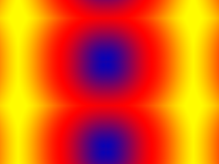

Extensions and GLEW

Last Updated 8/09/12
There's core OpenGL functionality and then there's extended OpenGL functionality. OpenGL version 1.1 only has two modes of texture wrap. OpenGL 2.1 has 5. Using the OpenGL Extension Wrangler (GLEW), we'll get the addresses of the function pointers and the constants we need to use the new forms of texture wrap.Setting up GLEW
OpenGL has no built in capability to get function pointers for new functionality. Typically, the developer of the platform gives APIs to get the function pointers (like wgl on Windows) but it's a pain having write routines to get extended functionality for each platform you work on. GLEW allows you to get all the function pointers you need with a single function call.You can download GLEW here. Windows users will want to download the Windows SDK (again, I'm assuming we're using 32bit binaries for this tutorial). MinGW users may have to compile the dll themselves. Fortunately, this is as easy as compiling glew.c as a dll.
As with freeGLUT you need to make sure:
- Your compiler can find the header files
- Your compiler can find the library files
- You tell the linker to link against the library. In this case we need to link against glew32 on windows and glew on *nix
- The library binaries are in a place where the OS can find them
From LOpenGL.h
#ifndef LOPENGL_H
#define LOPENGL_H
#include <GL/glew.h>
#include <GL/freeglut.h>
#include <GL/gl.h>
#include <GL/glu.h>
#endif
Here we're augmenting our OpenGL header to include GLEW functionality. When using GLEW, make sure to include glew.h before any other OpenGL headers or it will throw a fit.
From LUtil.cpp
bool initGL()
{
//Initialize GLEW
GLenum glewError = glewInit();
if( glewError != GLEW_OK )
{
printf( "Error initializing GLEW! %s\n", glewGetErrorString( glewError ) );
return false;
}
//Make sure OpenGL 2.1 is supported
if( !GLEW_VERSION_2_1 )
{
printf( "OpenGL 2.1 not supported!\n" );
return false;
}
At the top of our initialization function, we want to grab our OpenGL extended functionality with glewInit(). This function initializes all the extended OpenGL capabilities that
your OpenGL driver supports and leaves it ready for us to use.
GLEW also comes with some useful constants. If "GLEW_VERSION_2_1" is true, we have at least OpenGL 2.1 core functionality.
In this chunk of code, we verify that we have 2.1 functionality available to us before we do the rest of our initialization.
GLEW also comes with some useful constants. If "GLEW_VERSION_2_1" is true, we have at least OpenGL 2.1 core functionality.
In this chunk of code, we verify that we have 2.1 functionality available to us before we do the rest of our initialization.
From LUtil.cpp
//Set the viewport
glViewport( 0.f, 0.f, SCREEN_WIDTH, SCREEN_HEIGHT );
//Initialize Projection Matrix
glMatrixMode( GL_PROJECTION );
glLoadIdentity();
glOrtho( 0.0, SCREEN_WIDTH, SCREEN_HEIGHT, 0.0, 1.0, -1.0 );
//Initialize Modelview Matrix
glMatrixMode( GL_MODELVIEW );
glLoadIdentity();
//Initialize clear color
glClearColor( 0.f, 0.f, 0.f, 1.f );
//Enable texturing
glEnable( GL_TEXTURE_2D );
//Set blending
glEnable( GL_BLEND );
glDisable( GL_DEPTH_TEST );
glBlendFunc( GL_SRC_ALPHA, GL_ONE_MINUS_SRC_ALPHA );
//Check for error
GLenum error = glGetError();
if( error != GL_NO_ERROR )
{
printf( "Error initializing OpenGL! %s\n", gluErrorString( error ) );
return false;
}
//Initialize DevIL and DevILU
ilInit();
iluInit();
ilClearColour( 255, 255, 255, 000 );
//Check for error
ILenum ilError = ilGetError();
if( ilError != IL_NO_ERROR )
{
printf( "Error initializing DevIL! %s", iluErrorString( ilError ) );
return false;
}
return true;
}
As you can see, the rest of our initialization is the same as before.
From LUtil.cpp
bool loadMedia()
{
//Load texture
if( !gRepeatingTexture.loadTextureFromFile( "15_extensions_and_glew/texture.png" ) )
{
printf( "Unable to load repeating texture!\n" );
return false;
}
return true;
}
void update()
{
//Scroll texture
gTexX++;
gTexY++;
//Cap scrolling
if( gTexX >= gRepeatingTexture.textureWidth() )
{
gTexX = 0.f;
}
if( gTexY >= gRepeatingTexture.textureHeight() )
{
gTexY = 0.f;
}
}
void render()
{
//Clear color buffer
glClear( GL_COLOR_BUFFER_BIT );
//Calculate texture maxima
GLfloat textureRight = (GLfloat)SCREEN_WIDTH / (GLfloat)gRepeatingTexture.textureWidth();
GLfloat textureBottom = (GLfloat)SCREEN_HEIGHT / (GLfloat)gRepeatingTexture.textureHeight();
//Use repeating texture
glBindTexture( GL_TEXTURE_2D, gRepeatingTexture.getTextureID() );
//Switch to texture matrix
glMatrixMode( GL_TEXTURE );
//Reset transformation
glLoadIdentity();
//Scroll texture
glTranslatef( gTexX / gRepeatingTexture.textureWidth(), gTexY / gRepeatingTexture.textureHeight(), 0.f );
//Render
glBegin( GL_QUADS );
glTexCoord2f( 0.f, 0.f ); glVertex2f( 0.f, 0.f );
glTexCoord2f( textureRight, 0.f ); glVertex2f( SCREEN_WIDTH, 0.f );
glTexCoord2f( textureRight, textureBottom ); glVertex2f( SCREEN_WIDTH, SCREEN_HEIGHT );
glTexCoord2f( 0.f, textureBottom ); glVertex2f( 0.f, SCREEN_HEIGHT );
glEnd();
//Update screen
glutSwapBuffers();
}
For this tutorial, we're doing the same texture mapping/rendering as in the previous tutorial. What we're doing different is how we set our texture wrapping.
From LUtil.cpp
void handleKeys( unsigned char key, int x, int y )
{
//If q is pressed
if( key == 'q' )
{
//Cycle through texture wraps
gTextureWrapType++;
if( gTextureWrapType >= 5 )
{
gTextureWrapType = 0;
}
//Set texture repetition
glBindTexture( GL_TEXTURE_2D, gRepeatingTexture.getTextureID() );
switch( gTextureWrapType )
{
case 0:
glTexParameteri( GL_TEXTURE_2D, GL_TEXTURE_WRAP_S, GL_REPEAT );
glTexParameteri( GL_TEXTURE_2D, GL_TEXTURE_WRAP_T, GL_REPEAT );
printf( "%d: GL_REPEAT\n", gTextureWrapType );
break;
case 1:
glTexParameteri( GL_TEXTURE_2D, GL_TEXTURE_WRAP_S, GL_CLAMP );
glTexParameteri( GL_TEXTURE_2D, GL_TEXTURE_WRAP_T, GL_CLAMP );
printf( "%d: GL_CLAMP\n", gTextureWrapType );
break;
case 2:
glTexParameteri( GL_TEXTURE_2D, GL_TEXTURE_WRAP_S, GL_CLAMP_TO_BORDER );
glTexParameteri( GL_TEXTURE_2D, GL_TEXTURE_WRAP_T, GL_CLAMP_TO_BORDER );
printf( "%d: GL_CLAMP_TO_BORDER\n", gTextureWrapType );
break;
case 3:
glTexParameteri( GL_TEXTURE_2D, GL_TEXTURE_WRAP_S, GL_CLAMP_TO_EDGE );
glTexParameteri( GL_TEXTURE_2D, GL_TEXTURE_WRAP_T, GL_CLAMP_TO_EDGE );
printf( "%d: GL_CLAMP_TO_EDGE\n", gTextureWrapType );
break;
case 4:
glTexParameteri( GL_TEXTURE_2D, GL_TEXTURE_WRAP_S, GL_MIRRORED_REPEAT );
glTexParameteri( GL_TEXTURE_2D, GL_TEXTURE_WRAP_T, GL_MIRRORED_REPEAT );
printf( "%d: GL_MIRRORED_REPEAT\n", gTextureWrapType );
break;
}
}
}
Thanks to GLEW, we now have a total of 5 ways to wrap texture. "GL_CLAMP_TO_BORDER" will clamp to the texture's border, which causes the texture to stop mapping past 0.0 or 1.0.
"GL_CLAMP_TO_EDGE" will clamp the texture at 0.0 or 1.0 and then use the texel values at the edge and stretch them to the edge of the polygon. "GL_MIRRORED_REPEAT" will make the
texture repeat past 0.0 or 1.0, only now it will mirror itself past every texture unit.